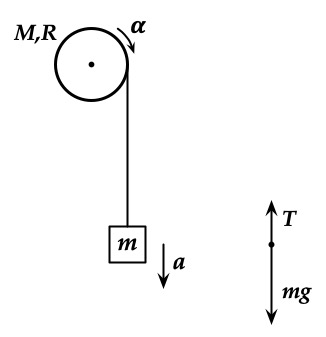
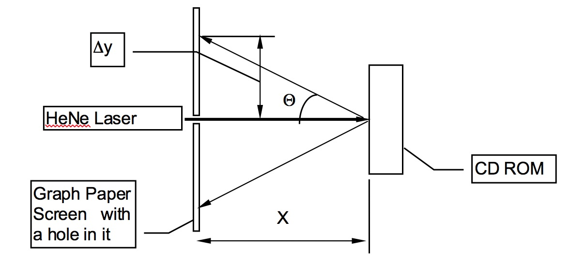

M1#
Introduction#
There are two types of physical quantities: scalars and vectors. The number of attributes required to define a scalar and a vector distinguishes them.
An example of a scalar quantity is temperature, and an example of a vector is a force.
In this laboratory, a force table is used to study the vector properties of forces:
How force vectors are added
The concept of forces in equilibrium
Background#
Differing from a scalar, which requires only a single value (positive or negative), a vector is a quantity described by a magnitude, direction, and units. For example, a force may have a magnitude of \(100\,\rm{newton}\) with a direction of \(90\rm{degree}\) counterclockwise from the \(x\)-axis. This force is written as \(100\,\rm{newton} \ @ \ 90\rm{degree}\). In this document, boldface type will indicate a vector, while regular typeface will represent the scalar magnitude and the components of the vector.
When several forces act on an object, it is often necessary to determine the sum of these forces, known as the resultant force. Suppose \(\vec{F}_1\) and \(\vec{F}_2\) act on a body. The resultant \(\vec{R}\) is defined as the vector sum of the two forces:
If multiple forces act on the body, the resultant is given by:
The resultant force is the single force that can replace all individual forces acting on the object. When the resultant force is zero, the object is said to be in equilibrium.
We will explore two methods of vector addition:
The graphical method
The method of components
Graphical Method#
As explained in the background section…..

The figure above shows the parallelogram method for adding two vectors. Both vectors are drawn from the same origin, and a parallelogram is constructed with the two vectors as adjacent sides. The diagonal of the parallelogram represents the resultant vector \(\vec{R}\).
Vectors \(\vec{F}_1\) and \(\vec{F}_2\) are added graphically as follows:
Begin at a convenient point on a piece of graph paper, usually at the origin of a rectangular coordinate system. Draw one of the vectors as an arrow to scale and pointing in the proper direction.
Place the second vector with its tail at the tip of the first, again drawn to scale and pointing in the proper direction.
The resultant \(\vec{R}\) is the vector drawn from the tail of the first vector to the tip of the second.
This process is illustrated in the Figure below, demonstrating that the addition operation does not depend on the order of addition. Thus, like scalar addition:
It is important to select an appropriate scale for drawing the vectors (e.g., \(1\,\rm{newton} = 10\,\rm{centimeter}\)). The magnitude of \(\vec{R}\) is determined using a ruler, and the angle \(\theta\) is measured using a protractor. Since the negative of a vector is merely the vector pointing in the opposite direction, subtraction is addition with the negative vector. Errors can be significantly reduced by using a scale that makes the drawing as large as possible. Neatness counts!
The figure above demonstrates .
Here is a “note” directive:
Note
To subtraction of vectors graphically, \(\vec{F}_1\) and \(-\vec{F}_2\), the vector \(\vec{F}_2\) is reversed to obtain \(-\vec{F}_2\), and the tail-to-tip method is applied to add \(\vec{F}_1\) and \(-\vec{F}_2\)
Method of Components#
